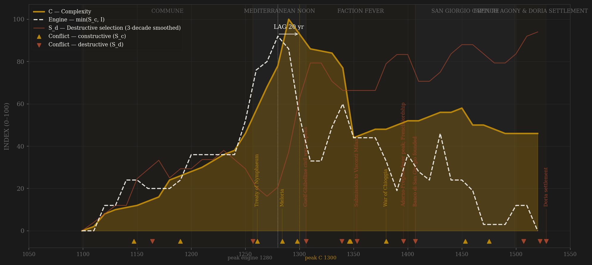
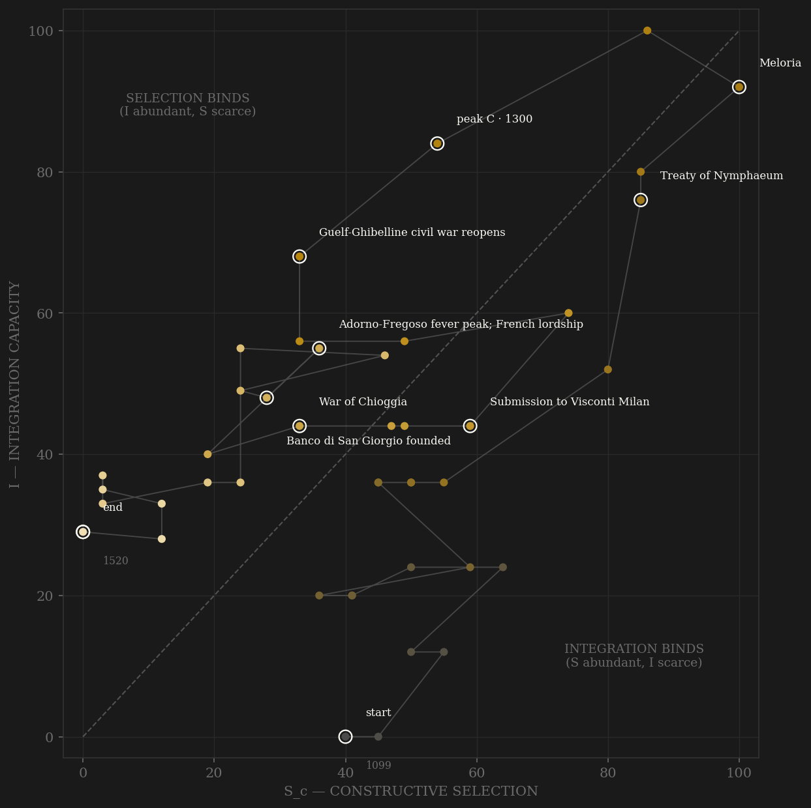

Genoa is the contrast case of the triptych: inputs almost identical to Venice — a maritime commune, a colonial circuit, precocious finance — and an institutional design that made the opposite trade. The engine peaks in the 1280s-90s, and the peak is real by any measure: Meloria (1284) annihilates Pisa's sea power, Curzola (1298) beats Venice itself, and in 1293 the customs registers record sea trade of roughly 3.4 million lire — about four times the ordinary revenue of the crown of France (Lopez). Population ~100,000, Caffa and Pera pumping the Black Sea into the Ligurian shore. Complexity peaks a row later: lag +20, PASS, under both definitions — and then the polity spends two centuries demonstrating what the framework's S_d term is for. The faction wars reopen in 1306, within eight years of Curzola, and never really stop: Guelf against Ghibelline, then Adorno against Fregoso, ten government changes in the 1390s alone, seventy-four between 1390 and 1528. Six times the commune hands itself to a foreign lord — France, Milan, France again — sovereignty outsourced to stop the feuding, which is not a conquest but a symptom. And beneath the burning palace, the strangest institution of the late-medieval world: the Banco di San Giorgio (1407), the state's revenues consolidated and assigned to a shareholder corporation. Machiavelli saw it plainly — 'a state within a state... the citizens transferred their love from the commune to San Giorgio.' The bank's paper trades ABOVE par through the century of maximum political chaos; by 1453 it administers Caffa and Corsica outright. Elite entry becomes a securities transaction; the C-channel migrates out of the republic and into the shareholders' assembly. The Ottomans amputate the circuit (Pera 1453, Caffa 1475), a dyer is elected doge and beheaded (1507), the city is sacked by an army its own faction invited in (1522), and in 1528 Andrea Doria performs the closure Venice had legislated in 1297: twenty-eight alberghi, a closed register, the popular dogate abolished. Genoa's Serrata — 231 years late, priced in blood the whole way.

The trajectory climbs the diagonal steadily for two centuries — the compagna, the crusade ports, Nymphaeum opening the Black Sea — and reaches its upper-right corner in the 1280s-90s with both axes near maximum: the best-governed stretch (the Doria-Spinola condominium) is also the richest. Then the path does what no other polity in the sample does as violently: it falls down BOTH axes at once, sawtoothing left and down as each faction cycle burns coordination and each lordship suspends contest. The 15th century is a smeared knot in the lower-middle of the plane — the state within the state (San Giorgio) holds commercial integration at a floor the political wars cannot breach, which is why I never reaches zero while S_c does. Where Venice's path coasts along the top and slides gently left, Genoa's thrashes: the two mirrored trajectories, printed side by side, are the comparative chapter's centerfold. The path dies at the S-floor in 1528 — closure as cure.
Coded by locus and target, never by outcome. Genoa's ledger is the anti-Venice: external contest comparable — Pisa, Venice four times, Aragon, the Ottomans — but the internal register is the densest in the sample. Venice had three failed conspiracies in five centuries; Genoa changed government seventy-four times in its last 138 years (countable from the doge lists — the honest frequency series is in the ledger). Chioggia (1378-81) is the cleanest cross-polity locus demonstration since the Dutch revolt: fought into VENICE'S lagoon, it is near-terminal S_d pressure on Venice's page and stays B on this one — Genoa's machinery never broke; it merely lost. The foreign lordships are the ledger's signature novelty: an invited sovereign is coded S_d because the invitation itself is the machinery confessing it cannot coordinate — violence-driven surrender, not conquest. The 1522 sack, delivered by Imperial troops the Adorno faction called in, is the pathology's terminal demonstration; the 1528 Doria settlement, bloodless, is its cure and the series' end.
| YEAR | CONFLICT | CODE | CODING RATIONALE |
|---|---|---|---|
| 1147 | Almería & Tortosa expeditions | Sc | Subscription fleets against Almoravid ports — shares sold against plunder: the corporate-venture template is born |
| 1164 | della Volta–Vento street wars | Sd | The first full faction fighting inside the walls — the signature pathology's debut (Epstein ch.2) |
| 1190 | Podesteria instituted | Sc | A foreign chief magistrate imported to referee the blocs — institutional reform through rules; the C-channel's answer to the D-channel |
| 1257 | Boccanegra popolo revolution | Sd | The merchant-popolo seize the executive — machinery contest, near-bloodless; the entry opening it delivered is in channel A |
| 1261 | Treaty of Nymphaeum | Sc | Genoa arms the Byzantine restoration and takes the Black Sea — the anti-Venice masterstroke; Pera 1267, Caffa follows |
| 1284 | Meloria | Sc | Pisa's sea power annihilated in one afternoon — the B triumph of the polity's life; victory keeps the internal peace for a generation |
| 1298 | Curzola | Sc | Venice beaten in the Adriatic; Marco Polo dictates his book in a Genoese cell — the noon's last victory |
| 1306 | Guelf-Ghibelline civil war reopens | Sd | Doria/Spinola vs Fieschi/Grimaldi street war — the diarchy collapses within eight years of Curzola; the noon squandered |
| 1339 | First doge (Simone Boccanegra) | Sd | Constitutional rupture by popolo revolution — the top office opened to new-family popolari; the opening is channel A's, the rupture is this row's |
| 1346 | Chios mahona | Sc | The island farmed to a shareholder company — corporate colonialism, elite entry by share purchase; the joint-stock colony |
| 1347 | The Caffa plague ships | Sc | Genoa's own galleys carry the Black Death west from the Crimea — the integration circuit as plague vector; scored in E (~40k of ~90k dead), listed here as the era's hinge |
| 1353 | Submission to Visconti Milan | Sd | After Alghero the commune VOLUNTARILY hands itself to a foreign lord to escape the war and its own factions — sovereignty outsourced = the S_d symptom at full purity; the first of six lordships |
| 1380 | War of Chioggia | Sc | The fourth Venice war, fought INTO Venice's lagoon and lost there — Genoa's machinery untouched: B on this ledger, near-terminal S_d pressure on Venice's (locus is a property of the polity, not the war) |
| 1396 | Adorno-Fregoso fever peak; French lordship | Sd | Ten government changes 1390-1400; Antoniotto Adorno hands the city to Charles VI to stop the wheel — 74 changes 1390-1528, the sample's S_d frequency maximum |
| 1407 | Banco di San Giorgio founded | Sd | The state's revenues privatized to a shareholder bank — no blood: the rentier event of the late-medieval world (Machiavelli FH VIII.29, 'a state within a state'); Serrata precedent — machinery captured by statute |
| 1453 | Fall of Pera; San Giorgio takes the colonies | Sc | Constantinople falls, the Black Sea begins to strangle — Ottoman external pressure; the commune contracts its empire out to its own creditors the same year |
| 1475 | Fall of Caffa | Sc | The Crimean metropolis surrenders to Gedik Ahmed Pasha — the colonial circuit amputated; external locus, scored to B pressure and E loss |
| 1507 | Paolo da Novi executed | Sd | A dyer elected doge by popular revolt; Louis XII retakes the city and beheads him — the last popolo opening drowned, a French citadel built to bridle the commune |
| 1522 | Sack of Genoa | Sd | Imperial-Spanish troops storm the city FOR the Adorno faction — the army invited in: the pathology's terminal demonstration |
| 1528 | Doria settlement | Sd | Andrea Doria expels the French and closes the constitution: 28 alberghi, popular dogate abolished — Genoa's Serrata, 231 years after Venice's; bloodless statute ends the series (Serrata/Yuanyou precedent) |
| COMPONENT | GRADE | BASIS |
|---|---|---|
| S_c A — Elite entry | ○ scholar-coded | Compagna 1099, consulate entry by merchant capital, alberghi consortia, popolo revolutions 1257/1339 (Adorno/Fregoso = gente nuova dynasties), Chios mahona 1346 (entry by share purchase), San Giorgio offices post-1407 (the rentier conversion — Machiavelli FH VIII.29 cited), 1528 closure. Epstein 1996 spine |
| S_c B — Peer rivalry (0.30 cap) | ○ scholar-coded | Pisa (Meloria 1284), Venice ×4 (Curzola 1298; Chioggia 1378-81 = B here, mirrored on Venice's page), Aragon over Sardinia/Corsica, Frederick II, Ottoman pressure on the colonies (Pera 1453, Caffa 1475) |
| S_c C — Internal within-rules | ○ scholar-coded | Consulate 1099-1190, podesteria 1190+, Doria-Spinola condominium 1270-1306 (the best-governed stretch), dogal elections when bloodless, San Giorgio shareholder governance as parallel polity (the C-channel migrating out of the state — flagged) |
| S_d — Destructive | ◐ countable + coded | Doge/government turnover per decade from Epstein's doge list: 74 changes 1390-1528, 10 in the 1390s alone (ledger column doge_changes) — the high-frequency-S_d control case vs Venice's 3 conspiracies in 5 centuries. Six foreign lordships coded S_d (sovereignty outsourced to stop the feuding); 1522 sack; 1528 rupture |
| I — Integration | ◐ split + measured strand | SPLIT 0.75 commercial / 0.25 political — the Genoa finding: mudae convoys, Nymphaeum circuit (Pera-Caffa-Chios), carati shares, marine insurance origins (◐), San Giorgio fiscal consolidation stay strong WHILE political coordination rots; San Giorgio price of par 1407-1528 (Epstein/Sieveking, measured: 92→120, rising through the chaos) z-spliced at 0.3. A case where the I composite needs the split — flagged for the framework, not hidden in a weight |
| C — Complexity | ○ coded + anchors | The 1293 customs noon (Lopez: sea trade ~3.4M lire ≈ 4× the French crown's ordinary revenue — the cite of record), colonial network extent, banking innovation, population ~100k (Epstein, Bairoch); no GDPpc series exists for Genoa — C = population + coded commercial-cultural ordinal |
| E — Entropy | ◐ countable + coded | Faction-war frequency arc (doge-turnover counts), the Caffa ships 1347 (~40k of ~90k dead — Genoa's own fleet imports the Black Death), colonial amputations 1453/1475, Chioggia war debt (the compere balloon San Giorgio consolidates), 1522 sack |
43 decade rows 1099-1520 (terminal row covers to 1528) built by scripts/build_genoa_sicre.py — scholar-coded from Epstein 1996 (spine), Lopez 1964, Balard 1978, Kirk 2005, Machiavelli FH VIII.29, with two harder strands: San Giorgio compere price-of-par 1407-1528 (Epstein/Sieveking via historic_master_v015, z-spliced into commercial-I at 0.3) and countable doge-turnover per decade (Epstein's appendix; ledger column). Straight-to-v2: Sc_v1_combat = channel B alone. Frozen-protocol lags: v2 engine 1280 → C 1300 = +20 PASS; v1 engine 1280 → C 1300 = +20 PASS (definitions agree — Meloria/Curzola decade is the peak under any reading; unsmoothed +10 SIMULTANEOUS, knife-edge noted per Athens precedent). I is SPLIT 0.75 commercial / 0.25 political because Genoa breaks the composite: San Giorgio par above 100 while doges lasted weeks — commercial-I and political-I diverging for a century is a finding about the framework, flagged upstream. Pull log: Bern San Giorgio digitization DNS-dead, Felloni sites anti-bot with no exposed series, archive.org Epstein dark — coded from print per protocol (SOURCES.md). THE TRIPTYCH: Venice closed entry by statute (1297) and bought near-zero S_d at the price of frozen S_c; Florence kept the forms and lost the substance (purses packed from 1434); Genoa kept entry violently open and paid in 74 governments over 138 years, then closed in 1528 as the cure. Three designs, one sea — the comparative chapter's spine; no pooled statistics computed (preregs sealed). Rebuild: build_genoa_sicre.py, then polity_report.py --slug genoa